13 Quantum Gravity and Plural Pursuit in Science
Overview
This chapter presents a novel approach to fundamental questions in the philosophy of science, specifically examining the landscape of quantum gravity research. The authors have developed a sophisticated methodology, integrating advanced linguistic analysis with social network analysis, to reconstruct the intellectual and social structures of scientific fields. Their core objective involves empirically determining whether quantum gravity research exemplifies “plural pursuit”—a state where distinct, concurrent instances of normal science, each articulated by a specific community and intellectual disciplinary matrix, collectively strive towards a common problem-solving goal.
The methodology commences with the meticulous collection of 228,748 abstracts and titles from theoretical physics literature, sourced from Inspire HEP. A two-step clustering pipeline then processes this extensive dataset. Linguistic analysis employs the Bertopic pipeline for spatialisation into an embedding space, followed by unsupervised clustering to identify 611 fine-grained topics. Subsequently, the authors assign each physicist a specialty based on their most common topic. Concurrently, social network analysis constructs a co-authorship graph, applying community detection to identify 819 distinct communities from a network of 30,000 physicists.
Recognising the inherent scale-dependent nature of computational topics and communities, the project introduces a hierarchical clustering approach for both linguistic and social structures. An adaptive topic coarse-graining strategy, guided by the Minimum Description Length (MDL) criterion, refines the initial 600 topics to a more manageable 50. This process preserves only those linguistic nuances crucial for understanding the social structure. The authors then rigorously compare this bottom-up reconstruction with physicists’ top-down intuitions, gathered via a survey of the International Society for Quantum Gravity’s founding members. A Support Vector Machine (SVM) classifier, trained on hand-coded labels and text embeddings, facilitates this crucial comparison.
Key findings indicate that whilst some top-down approaches align well with emergent bottom-up topics, others—particularly phenomenological or less conceptually autonomous frameworks—do not. Notably, the analysis reveals a significant overlap between “String Theory” and “Supergravity” within the bottom-up clusters. This convergence with expert intuition underscores the practical inseparability of these communities, despite their distinct historical and conceptual foundations. The work concludes by asserting that powerful computational methods offer a robust means to revisit and challenge long-held philosophical insights, effectively positioning computation as a continuation of philosophical inquiry.
13.1 Introduction to Plural Pursuit in Quantum Gravity
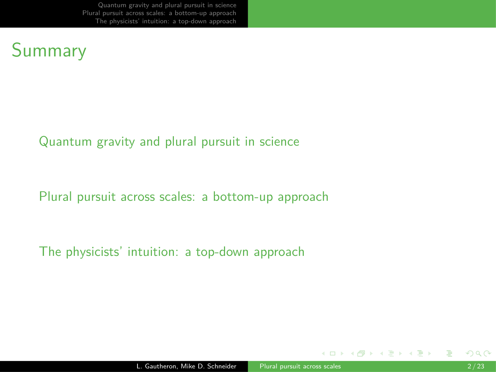
This evolving research project, a collaborative endeavour with Mike Schneider from the University of Missouri, addresses fundamental questions within the philosophy of science. The authors strategically combine contemporary analytical methods, previously discussed within the academic community, with social network analysis techniques. Their investigation centres on quantum gravity as a crucial case study. The team aims to construct a comprehensive bottom-up reconstruction of the quantum gravity research landscape, subsequently confronting this empirical model with the established intuitions of physicists regarding their field’s inherent structure.
13.2 Research Methodology and Structure
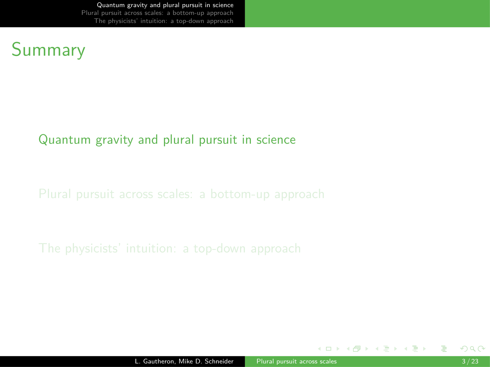
This chapter systematically unfolds in three distinct stages. Initially, it introduces the quantum gravity case study, establishing the philosophical framework that underpins the research. Subsequently, the discussion progresses to propose a detailed bottom-up reconstruction of the quantum gravity research landscape. The final stage involves a critical confrontation between this empirically derived bottom-up model and the prevailing intuitions of physicists concerning the organisation of their field.
13.3 The Problem of Quantum Gravity
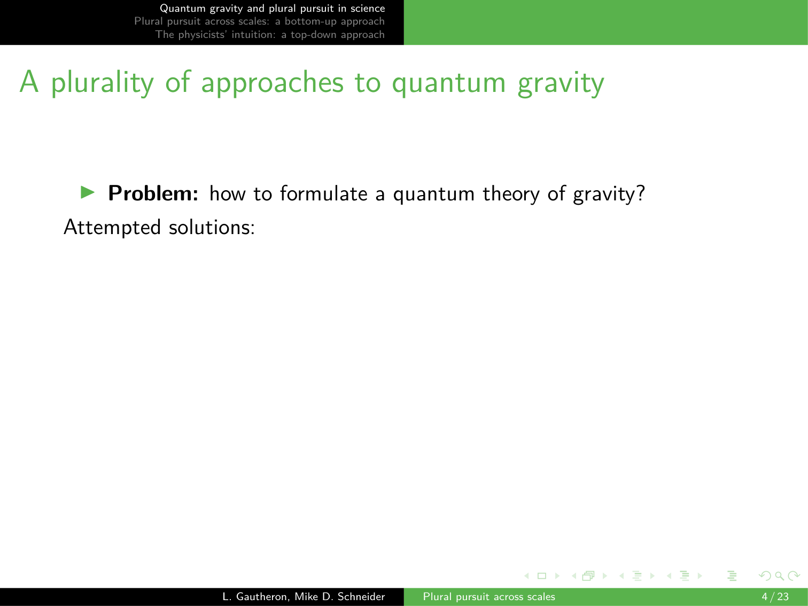
A persistent and profound challenge in contemporary fundamental physics involves formulating a coherent quantum theory of gravity. This endeavour fundamentally seeks to reconcile existing knowledge of phenomena at minuscule scales with observations pertaining to very large scales, thereby bridging a significant conceptual divide in theoretical physics.
13.4 Plurality of Approaches to Quantum Gravity
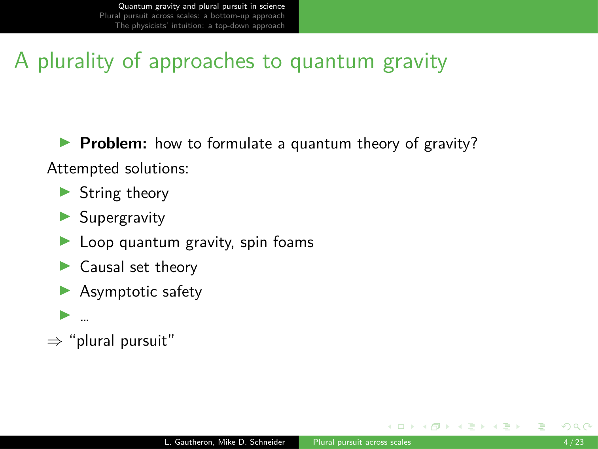
Numerous solutions have been proposed to address the quantum gravity problem, with String Theory emerging as the most prominent amongst them. Other notable attempted solutions encompass Supergravity, Loop Quantum Gravity, Spin Foams, Causal Set Theory, and Asymptotic Safety. To comprehensively account for this diverse landscape of research, the authors introduce the concept of “plural pursuit.”
13.5 Defining Plural Pursuit
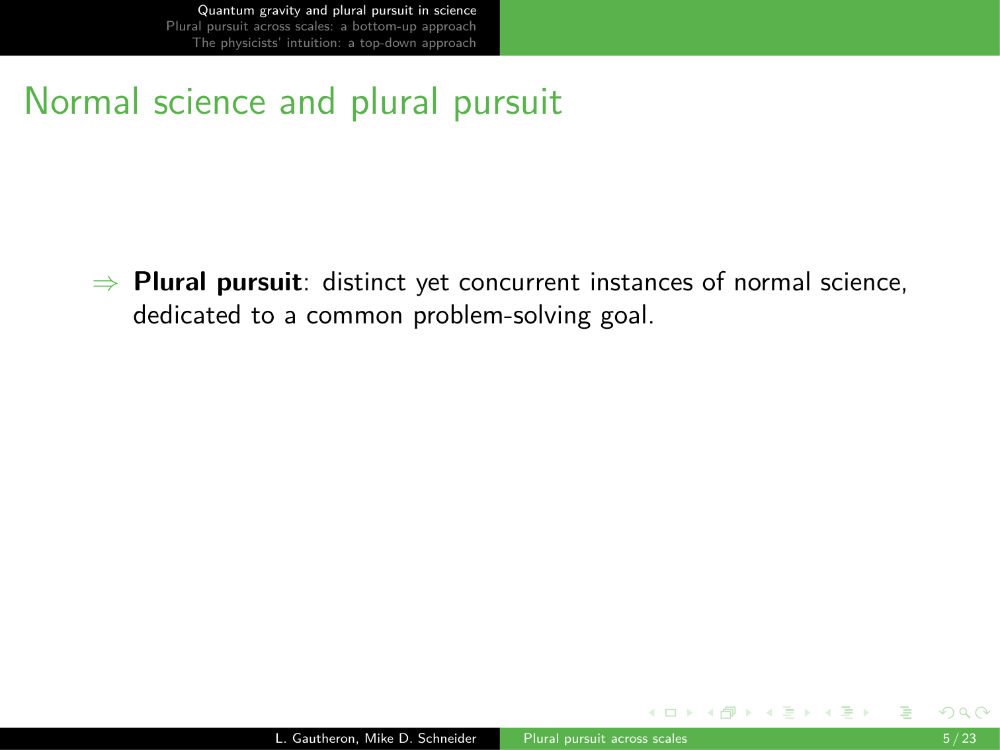
Plural pursuit designates situations characterised by distinct, yet concurrently active, instances of normal science. Each instance dedicates itself to a singular, overarching problem-solving objective. In the context of fundamental physics, this objective specifically involves reconciling the principles of quantum mechanics with those of gravitation.
13.6 Articulation of Normal Science Instances
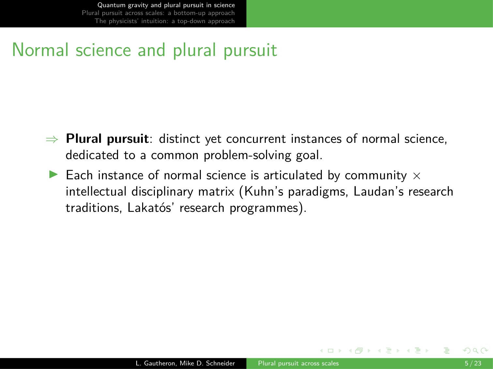
Each instance of normal science finds articulation through a specific social community, intrinsically linked to an intellectual disciplinary matrix. This conceptualisation aligns with, or explicitly appears within, numerous established accounts of research programme structures, notably encompassing Thomas Kuhn’s paradigms, Larry Laudan’s research traditions, and Imre Lakatos’ research programmes.
13.7 Empirical Question: Quantum Gravity as Plural Pursuit
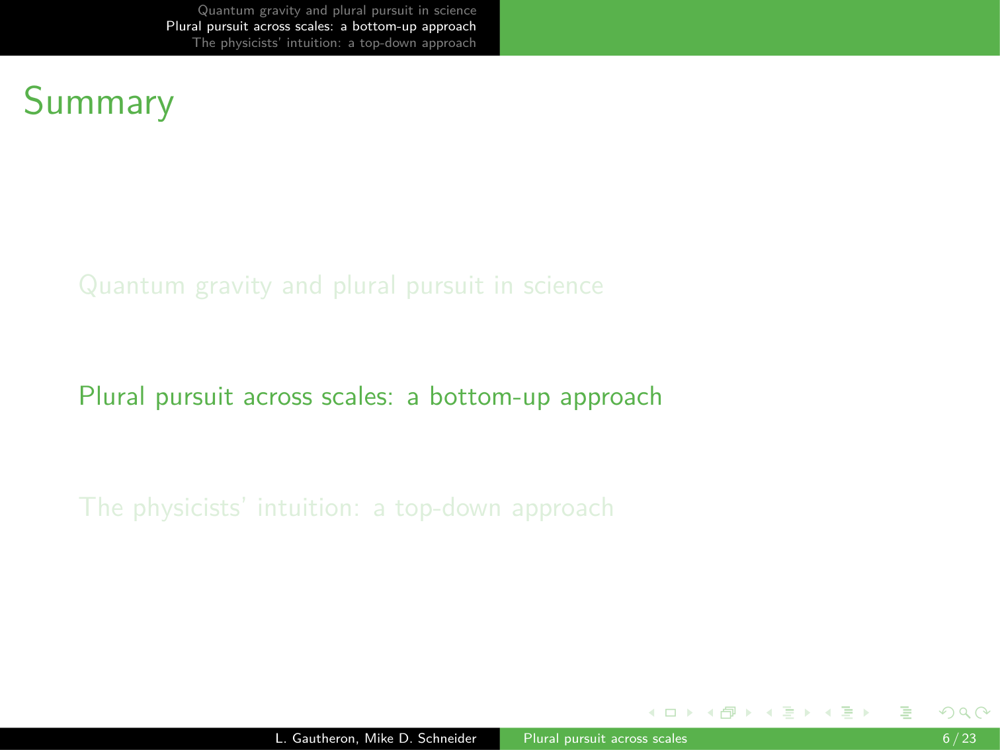
A central empirical question arises: does quantum gravity research constitute an instance of plural pursuit? This inquiry specifically investigates whether the field comprises independent communities concurrently pursuing distinct paradigms, thereby operating in parallel.
13.8 Bottom-Up Reconstruction of Research Landscape
To address this question, the authors propose a comprehensive bottom-up reconstruction of the quantum gravity research landscape. This reconstruction meticulously analyses both the linguistic and intellectual structures of the field, alongside its intricate social organisation.
13.9 Data Collection and Clustering Pipeline Overview
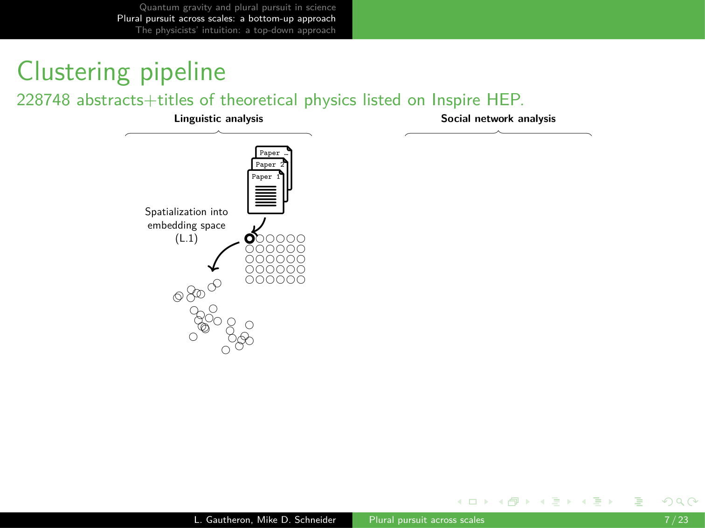
The authors initiated this study by collecting an extensive dataset comprising 228,748 abstracts and titles from fundamental physics literature, primarily sourced from the Inspire HEP database. This substantial corpus then underwent a two-step processing pipeline. The first step involved a linguistic analysis, meticulously reconstructing the intellectual structure of the field, primarily utilising the Bertopic pipeline. Concurrently, a social network analysis proceeded to reconstruct the field’s social structure.
13.10 Linguistic Analysis: Spatialisation
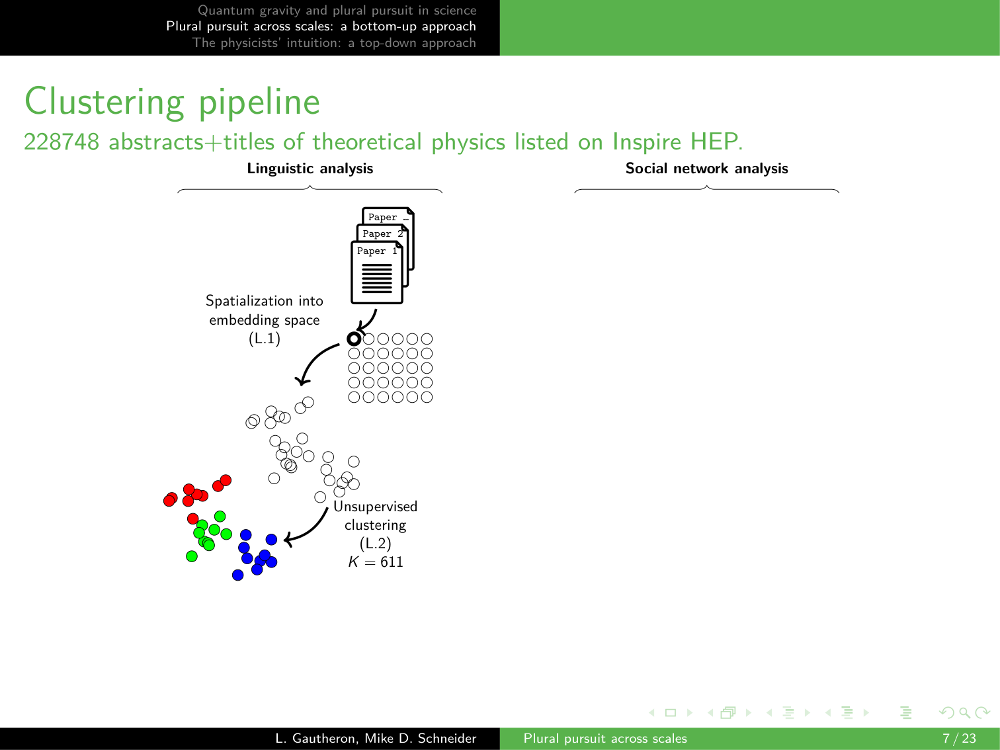
The initial phase of the linguistic analysis involves spatialising the collected documents. This process maps each document into a high-dimensional embedding space, designated as L-1, thereby transforming textual data into a numerical representation suitable for further computational analysis.
13.11 Linguistic Analysis: Unsupervised Clustering
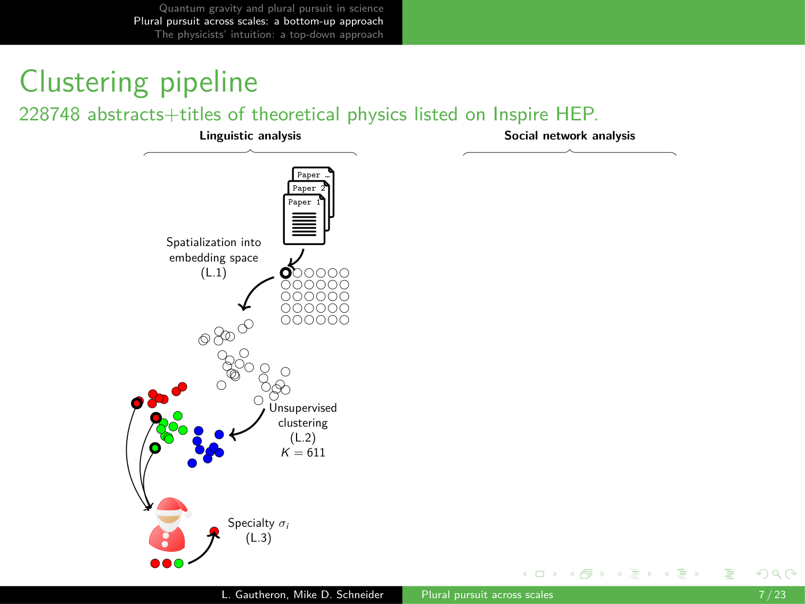
Following spatialisation, unsupervised clustering proceeds within the embedding space, designated as L-2. This process yields a highly granular partition of the literature, resulting in 611 distinct topics. Such a fine-grained resolution proves essential for capturing niche approaches within quantum gravity, some of which may encompass as few as one hundred publications.
13.12 Linguistic Analysis: Specialty Assignment
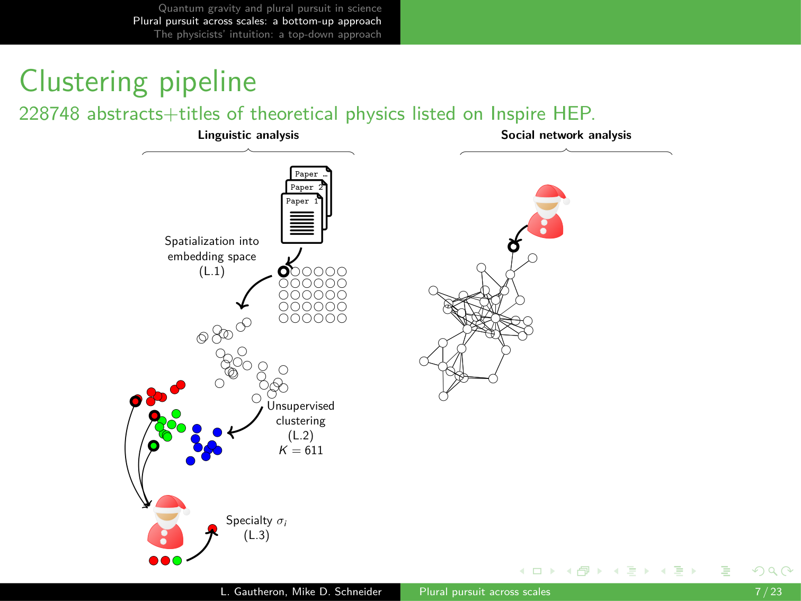
The linguistic analysis culminates in assigning a specific specialty to each scientist, denoted as σ_i (L-3). This specialty corresponds to the most frequently occurring topic across an individual’s published works. Consequently, this method effectively partitions each author according to the field’s underlying linguistic and intellectual structure.
13.15 Operationalising Plural Pursuit
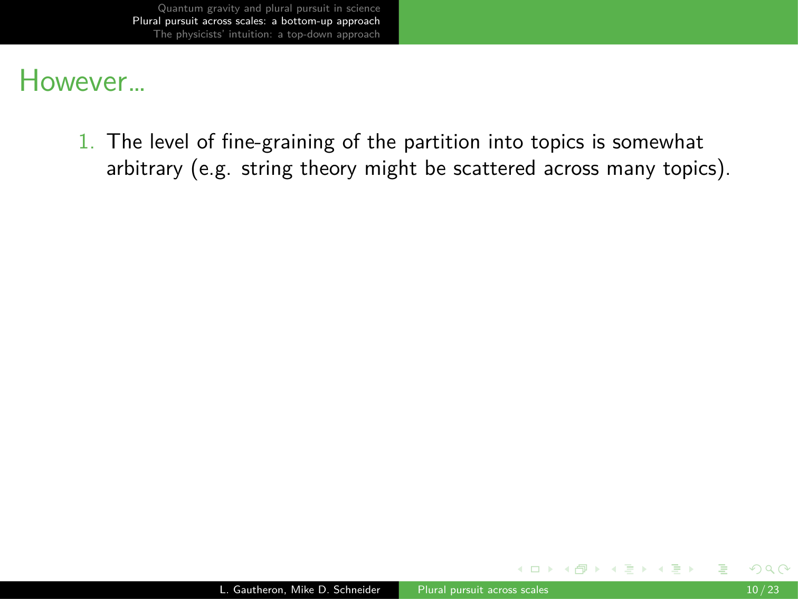
Operationalising the concept of plural pursuit involves establishing a direct one-to-one correspondence between identified communities and their associated topics. This ideal configuration would manifest as a block-diagonal correlation matrix, where communities align exclusively with distinct intellectual domains. Such a matrix would unequivocally signify a clear division of labour and specialisation amongst the various research groups.
13.16 Initial Correlation Matrix Complexity
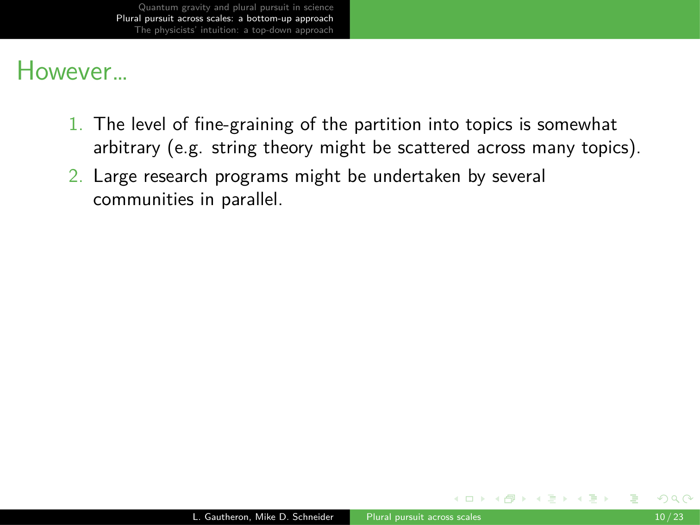
However, directly applying the fine-grained partition of the field into communities and topics yields a highly complex and “messy” correlation heatmap. This intricate pattern, whilst indicative of underlying structure, proves exceptionally challenging to interpret meaningfully.
13.17 Challenges with Fine-Grained Partitioning
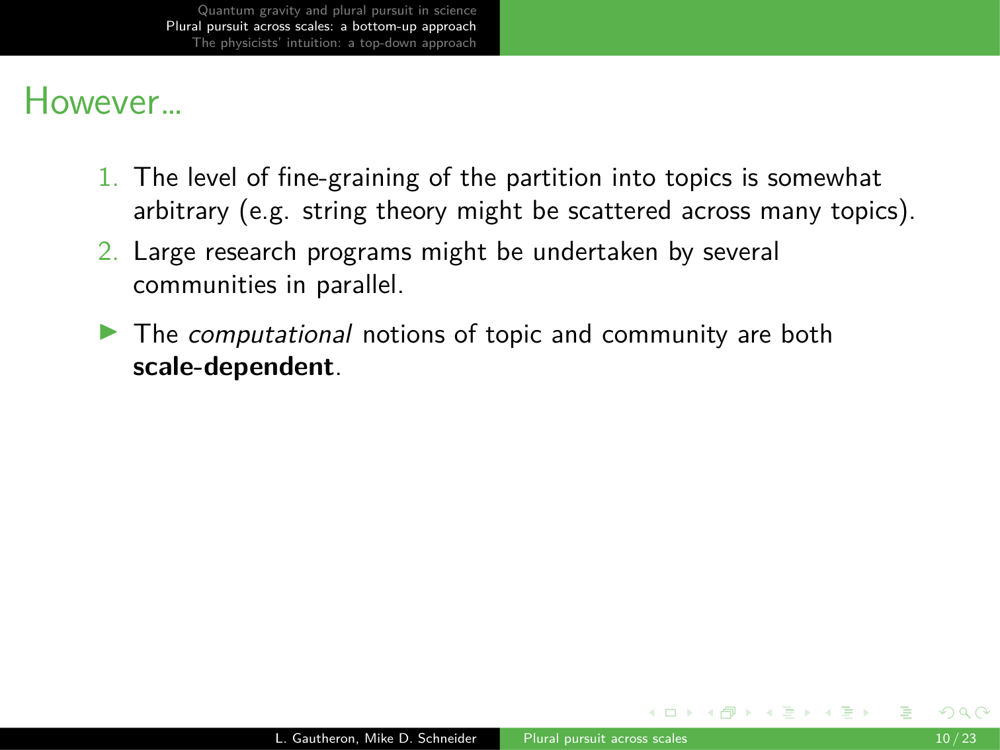
The observed complexity stems from two primary issues. Firstly, the chosen level of fine-graining for topic partitioning proves somewhat arbitrary; for instance, String Theory, intuitively a cohesive research programme, might inadvertently scatter across numerous distinct topics. Secondly, large-scale research programmes frequently involve parallel efforts by multiple communities, further complicating a clear one-to-one mapping.
13.18 Scale-Dependence of Computational Notions
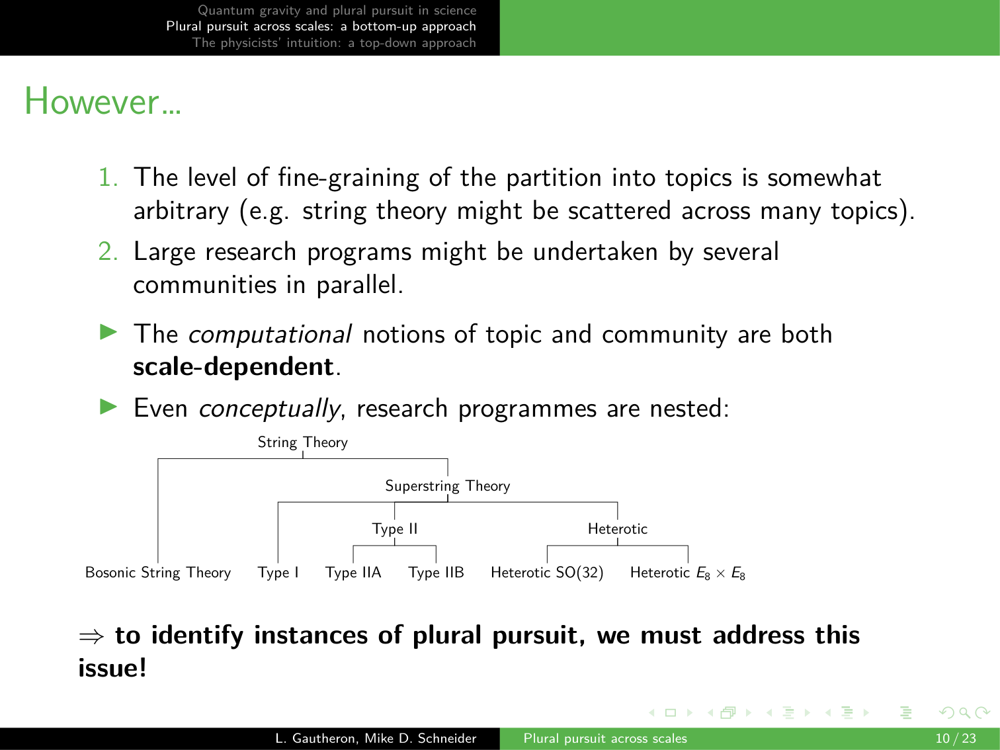
These challenges fundamentally derive from a more profound issue: the computational definitions of both “topic” and “community” inherently depend on the scale of analysis. Consequently, both the scientific literature and its underlying social networks permit partitioning at various levels of granularity.
13.19 Conceptual Nesting of Research Programmes
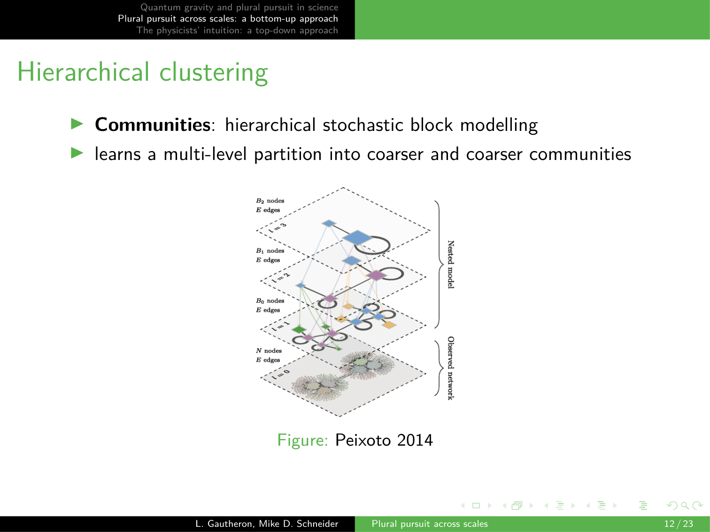
Beyond a mere technical challenge, this issue reflects a deeper conceptual reality: research programmes are inherently nested. For instance, String Theory encompasses Superstring Theory, which itself branches into Type II and Heterotic variants. Type II further subdivides into Type IIA and Type IIB, whilst Heterotic differentiates into Heterotic SO(32) and Heterotic E8 × E8. Moreover, String Theory also includes Bosonic String Theory and Type I.
13.20 Addressing Scale Ambiguity for Plural Pursuit
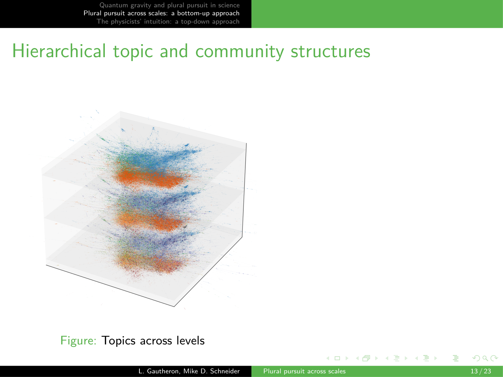
Consequently, to accurately identify instances of plural pursuit, the authors must directly address the inherent ambiguity arising from the analysis across disparate scales. This necessitates a methodological approach capable of navigating and resolving such multi-scale complexities.
13.21 Hierarchical Clustering for Topics
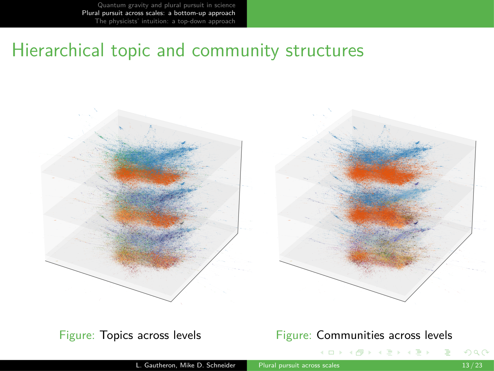
To resolve the scale ambiguity, the authors propose a hierarchical reconstruction of the quantum gravity research landscape. For topics, they employ Ward agglomerative clustering, systematically merging the initial 600 fine-grained topics one by one, guided by a predefined objective function.
13.22 Hierarchical Clustering for Communities
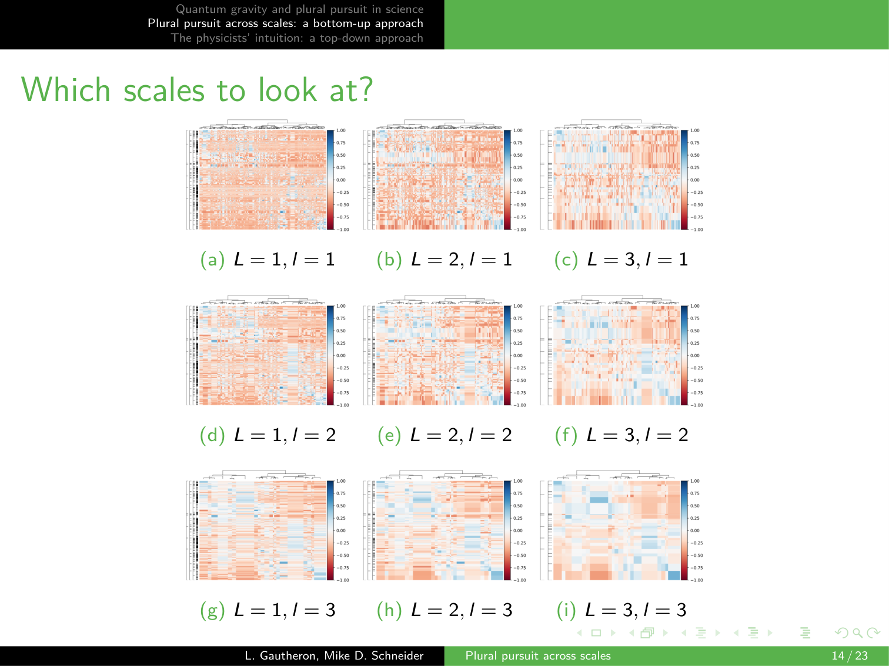
Similarly, for the community structure, the authors constructed a hierarchical clustering. This process explicitly leverages a hierarchical stochastic block model from its inception, which inherently learns a multi-level partition, progressively identifying coarser communities from the underlying network.
13.23 Observing Socio-Epistemic Systems at Multiple Scales
These meticulously constructed hierarchical structures inherently introduce a notion of scale, enabling observation of the socio-epistemic system at various levels of granularity. For instance, within the co-authorship network, each dot symbolises a physicist, with its colour denoting their specific specialty. This specialty remains observable across different levels of coarse-graining applied to the linguistic structure.
13.24 Multi-Level Community Structure Visualisation
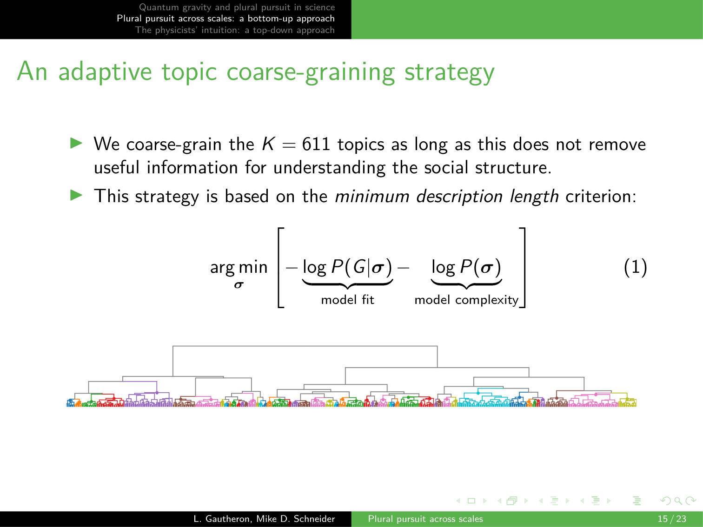
Crucially, an analogous multi-level observation capability extends to the community structure, allowing for a comprehensive analysis of its organisation at varying scales.
13.25 Challenge of Scale Selection
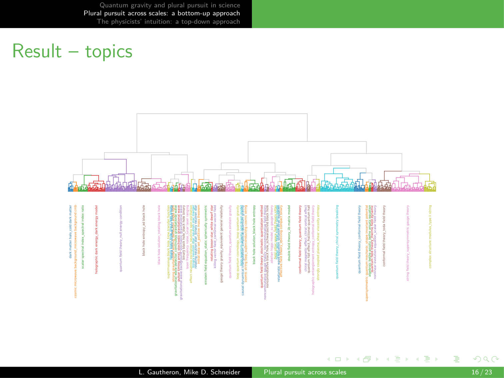
Despite the development of hierarchical models, the selection of an appropriate scale for analysis remains an arbitrary decision at this juncture. Determining the optimal scale for either the linguistic or social structure presents a significant challenge.
13.26 Adaptive Topic Coarse-Graining Strategy
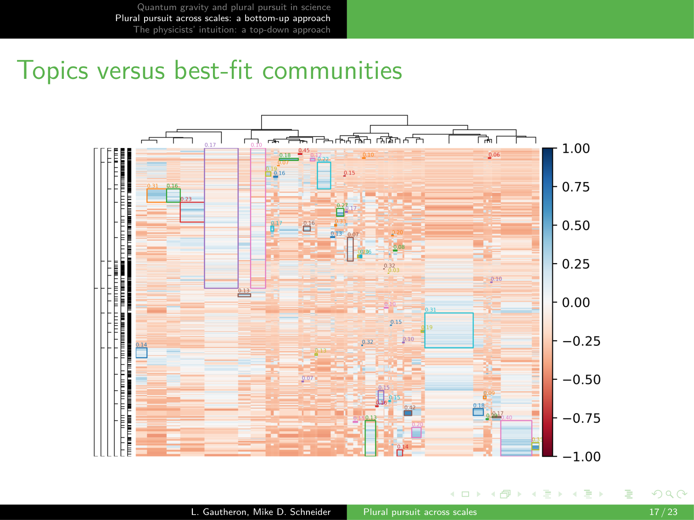
To address the challenge of scale selection, the authors propose an adaptive topic coarse-graining strategy. This approach acknowledges that many linguistic nuances, whilst conceptually real, may not significantly impact the collaborative capabilities of scientists. Consequently, the method systematically removes degrees of freedom from the initial fine-grained partition, provided this reduction does not diminish the useful information required to comprehend the social structure. This strategy fundamentally relies upon the Minimum Description Length (MDL) criterion, an information-theoretic principle. The MDL criterion identifies the optimal partition by minimising a quantity that judiciously balances two critical factors: the linguistic partition’s explanatory power concerning the field’s social structure, and the imperative to maintain a partition that avoids excessive complexity or fine-graining.
13.27 Results of Adaptive Coarse-Graining
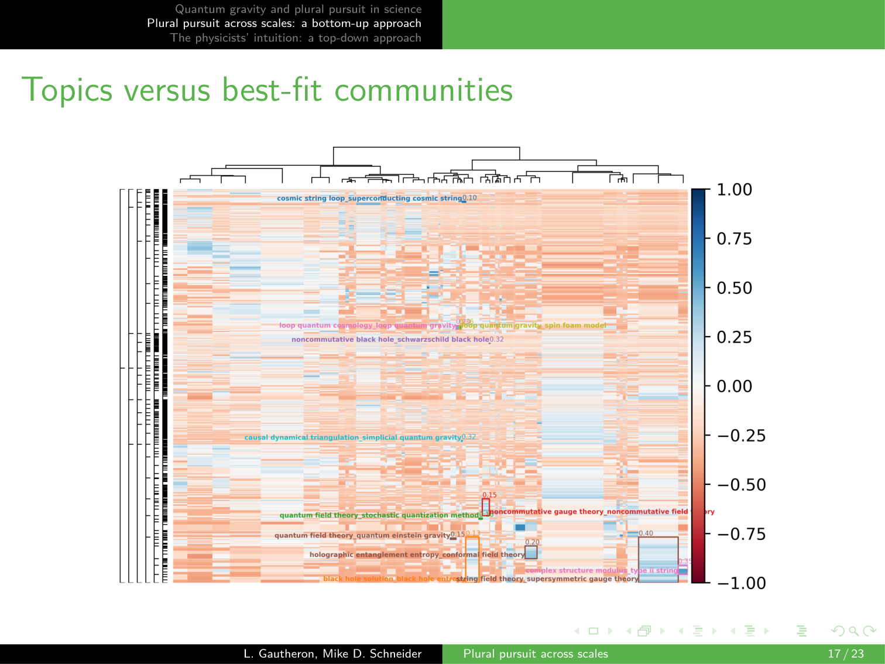
Applying the Minimum Description Length criterion to the initial 600 topics yielded a refined set of just 50 coarse-grained topics. A notable observation from this process is the preservation of certain small-scale linguistic topics, underscoring their critical importance for comprehending the underlying social structure. Conversely, numerous other topics coalesced into much larger, broader categories. This outcome unequivocally confirmed the necessity of commencing with a highly fine-grained classification, as specific small topics demonstrably influence the social dynamics of the field. The authors subsequently assigned descriptive labels to these 50 resulting topics by extracting representative n-grams, focusing specifically on those relevant to quantum gravity.
13.28 Matching Coarse-Grained Topics with Community Structures
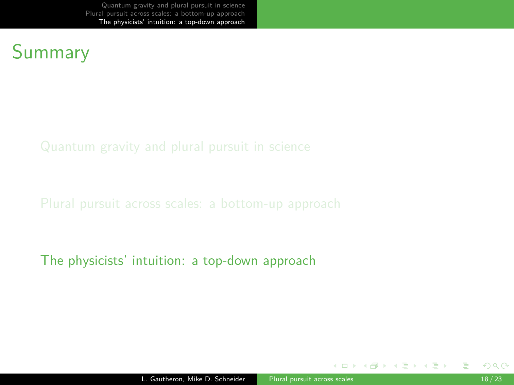
The authors proceeded to match the newly derived coarse-grained topics against the various community structures across different scales, employing a comprehensive correlation matrix. For each topic, represented as a column in the matrix, their analysis sought to identify the community that best explained its prevalence across the hierarchical levels of the community structure. Interestingly, some broad topics, such as a prominent large purple topic, exhibited no specific ties to any single community, suggesting their widespread relevance across the field. Conversely, other topics, notably String Theory, demonstrated a strong correspondence with a specific research programme, which itself aligned with a community structure at the third level of the hierarchy. However, certain quantum gravity research programmes, such as Loop Quantum Gravity, corresponded to communities situated at much lower, more fine-grained levels within the hierarchy. Overall, the findings did not present a clear instance of plural pursuit; instead, the analysis revealed intricate nested structures and entangled scales. For example, a smaller community focused on holography was observed to reside within the broader String Theory community, illustrating complex interdependencies rather than clear divisions.
13.29 Confronting Bottom-Up Reconstruction with Physicists’ Intuition
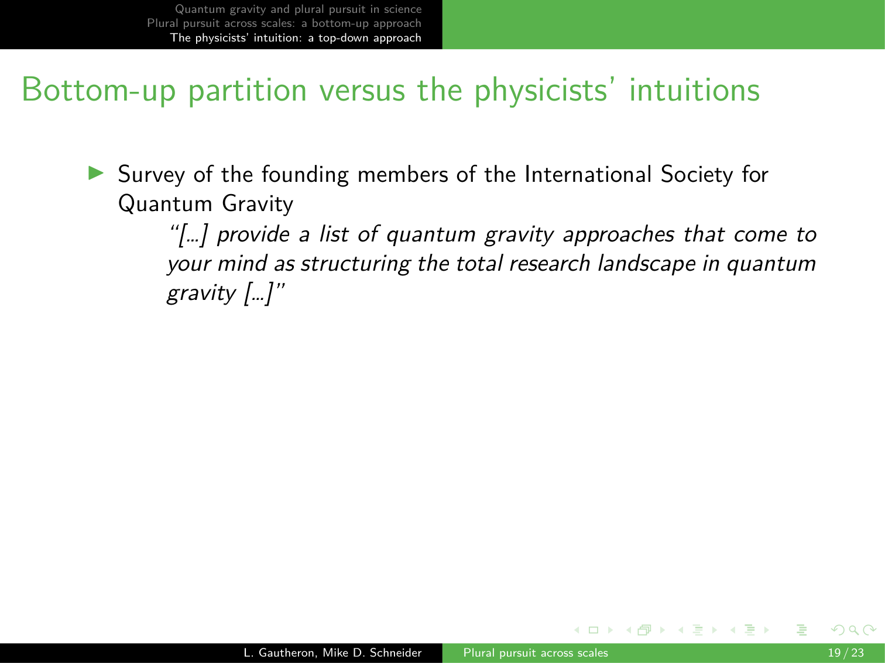
The investigation then transitioned to a critical phase: confronting the empirically derived bottom-up reconstruction with the prevailing intuitions of physicists regarding the inherent structure of their field. This comparative analysis aimed to validate or re-evaluate the computational model against expert understanding.
13.30 Surveying Physicists’ Intuitions
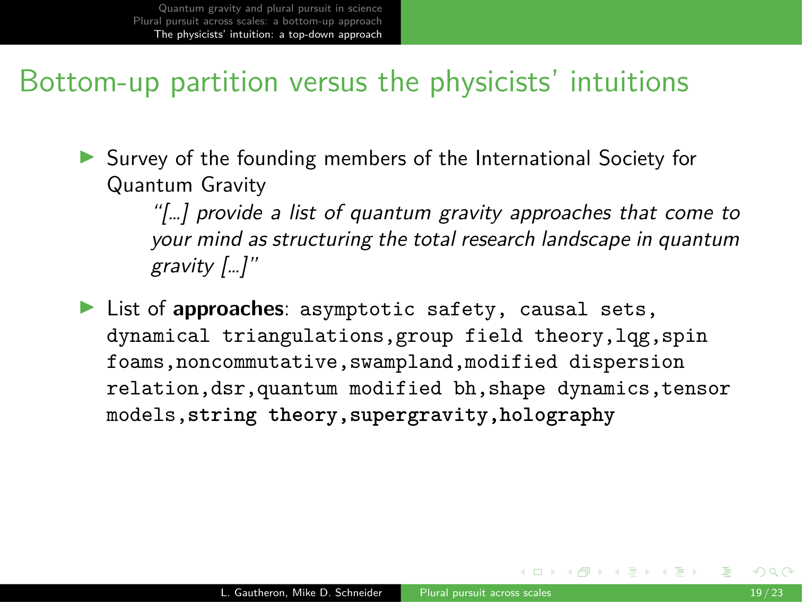
To ascertain expert intuition, the authors conducted a survey targeting the founding members of the International Society for Quantum Gravity. Participants received a specific request: to enumerate the quantum gravity approaches they perceived as fundamentally structuring the entirety of the research landscape.
13.31 Identified Quantum Gravity Approaches
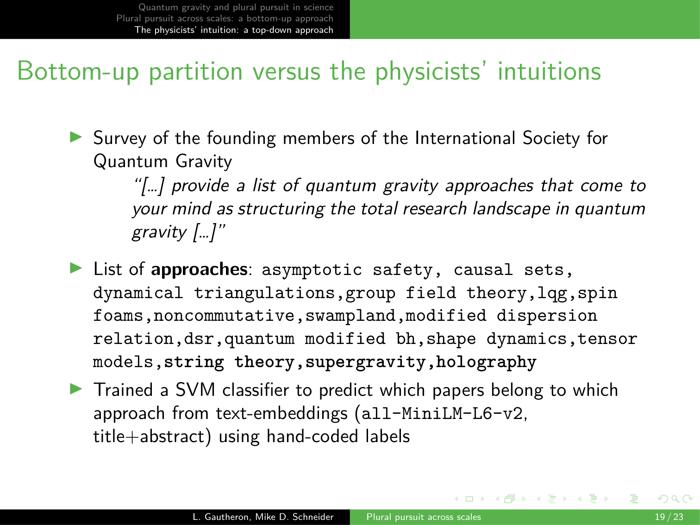
The survey feedback, whilst revealing some disagreement amongst physicists, collectively yielded a comprehensive list of approaches that effectively partition the field. This extensive list encompasses: Asymptotic Safety, Causal Sets, Dynamical Triangulations, Group Field Theory, Loop Quantum Gravity (LQG), Spin Foams, Noncommutative Geometry, Swampland Conjectures, Modified Dispersion Relations, Doubly Special Relativity (DSR), Quantum Modified Black Holes (BH), Shape Dynamics, Tensor Models, String Theory, Supergravity, and Holography. Notably, the analysis specifically concentrated on String Theory, Supergravity, and Holography. This particular focus arose from the observed divergence in physicists’ opinions regarding their distinctness; some experts considered them fundamentally intertwined with String Theory, despite their clear historical and conceptual differences.
13.32 Supervised Classification of Approaches
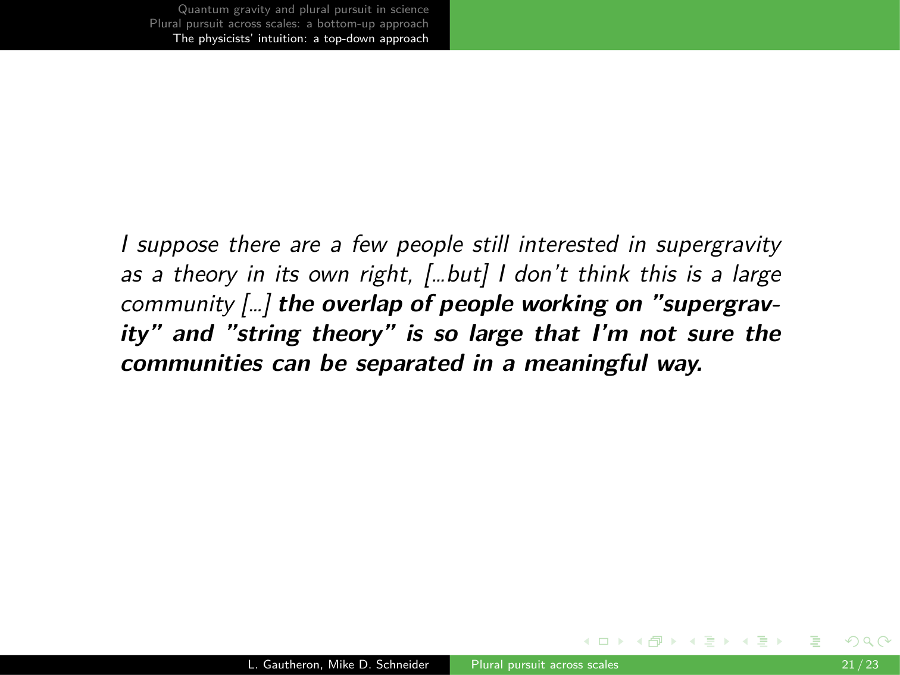
To facilitate the comparison, the authors trained a Support Vector Machine (SVM) classifier. This model’s primary function involved predicting the specific approach to which individual papers belonged. It leveraged text embeddings, generated by the all-MiniLM-L6-v2 model from both titles and abstracts, and relied upon meticulously hand-coded labels for its training regimen.
13.33 Top-Down vs. Bottom-Up Comparison
The supervised, top-down list of approaches underwent a direct confrontation with the bottom-up reconstruction. The analysis revealed that certain approaches exhibited a strong correspondence with the topics emerging from the bottom-up analysis. Conversely, other approaches, particularly those categorised as phenomenological or lacking a fully developed conceptual framework, demonstrated poor correlation. Notably, frameworks characterised by clear definitions and conceptual autonomy consistently showed robust correlations.
13.34 Convergence of Findings: String Theory and Supergravity
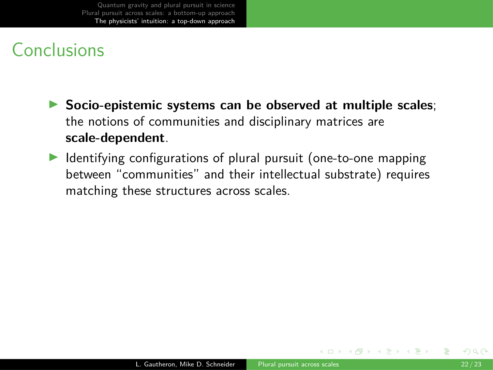
Crucially, the bottom-up approach unveiled a substantial String Theory cluster that effectively encompassed both Supergravity and String Theory. This finding remarkably converges with the prevailing intuition amongst physicists, who often perceive these communities as inseparable, notwithstanding their distinct historical trajectories and conceptual foundations. The coarse-graining process, by systematically eliminating linguistic nuances that bear no consequence for the social structure, effectively consolidated these areas. This outcome thus corroborates the physicists’ assessment that, due to extensive overlap, these communities defy meaningful separation.
13.35 Conclusions: Scale-Dependent Socio-Epistemic Systems
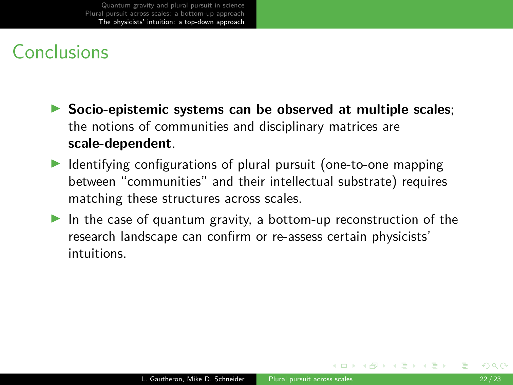
Socio-epistemic systems demonstrably lend themselves to observation across multiple scales. Consequently, the very notions of communities and disciplinary matrices inherently exhibit scale-dependence, necessitating a multi-scalar analytical approach.
13.36 Conclusions: Identifying Plural Pursuit
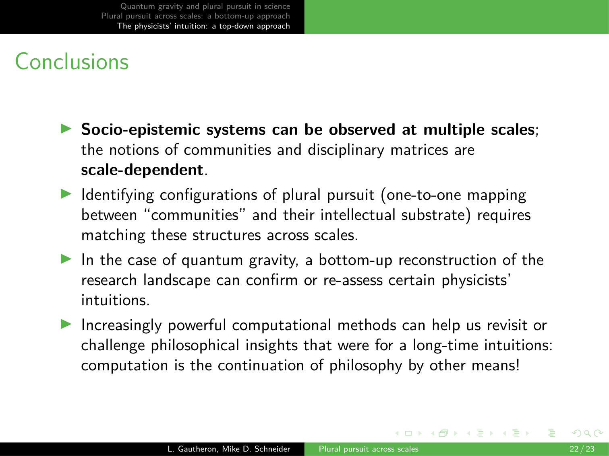
Identifying configurations indicative of plural pursuit, which fundamentally involve a one-to-one mapping between distinct communities and their corresponding intellectual substrates, necessitates the meticulous matching of these structures across various analytical scales.
13.37 Conclusions: Quantum Gravity Reconstruction
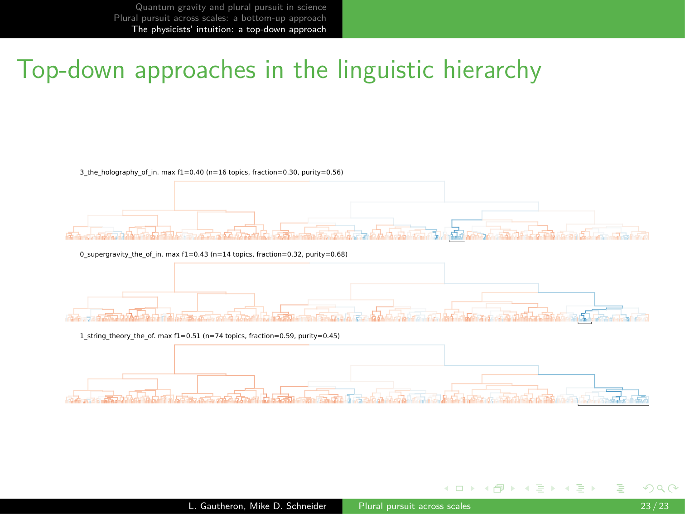
For quantum gravity, specifically, a bottom-up reconstruction of its intricate research landscape offers a powerful means to either corroborate or critically re-evaluate certain long-held intuitions amongst physicists.
13.38 Conclusions: Computation and Philosophy
Finally, the escalating power of computational methods provides an unprecedented capacity to revisit and indeed challenge established philosophical insights. This particularly applies to long-standing intuitions concerning the nature of paradigms or communities within specific scientific contexts, such as quantum gravity. As such, one might provocatively assert, paraphrasing Clausewitz, that computation represents the continuation of philosophy by other means.
13.13 Social Network Analysis: Co-authorship Graph
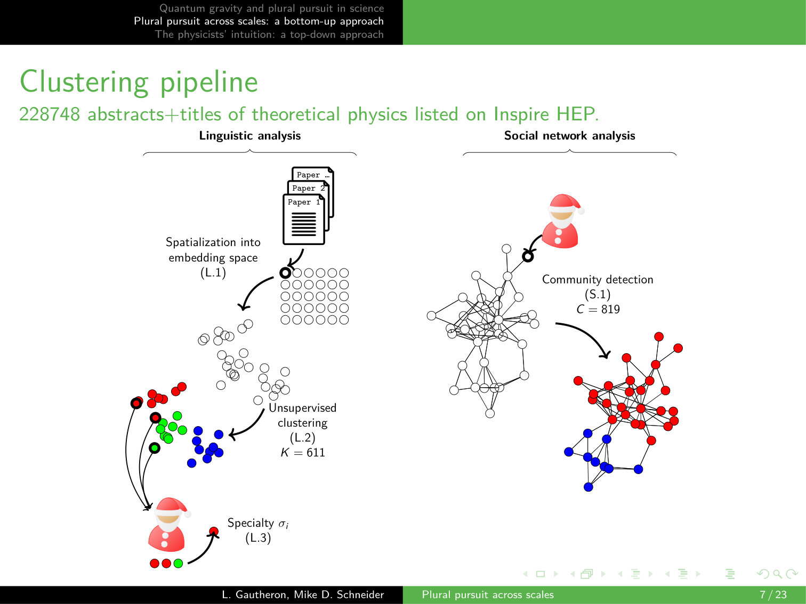
Concurrently with the linguistic analysis, the authors conducted a comprehensive social network analysis. This process commenced with the construction of a co-authorship graph, where individual physicists constitute the nodes, and the edges signify collaborative co-authorship relationships between them.